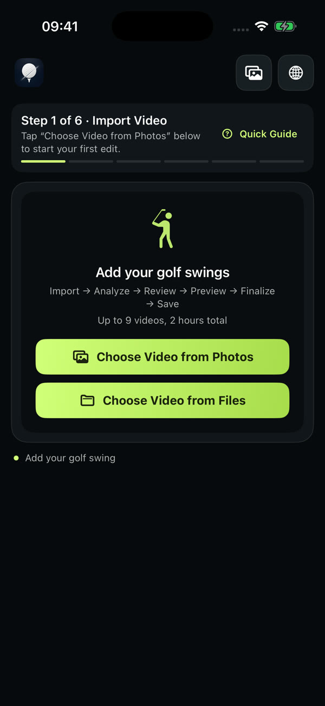
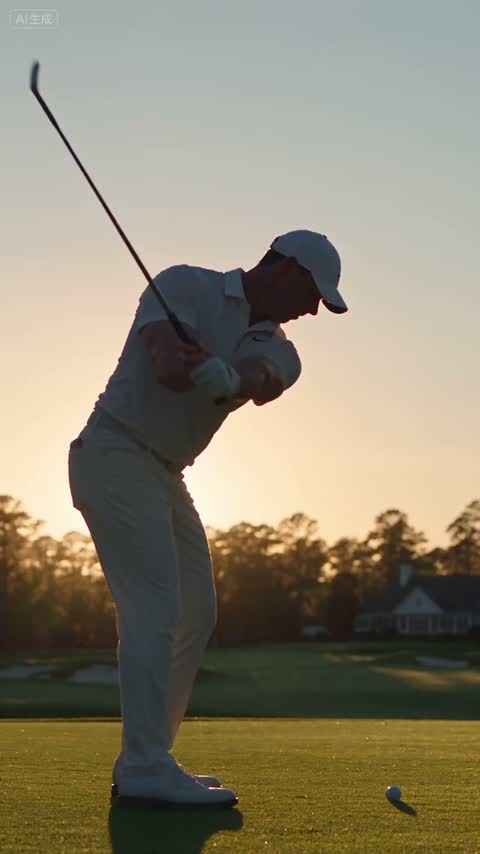
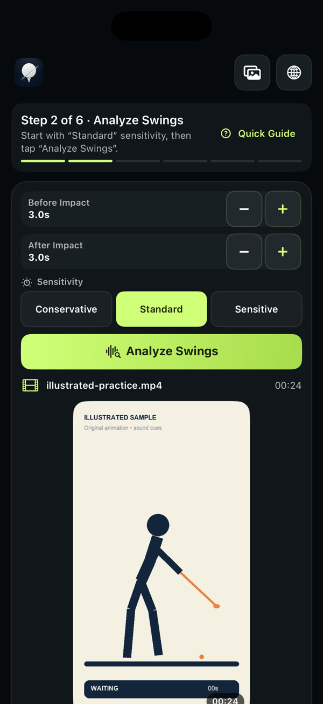
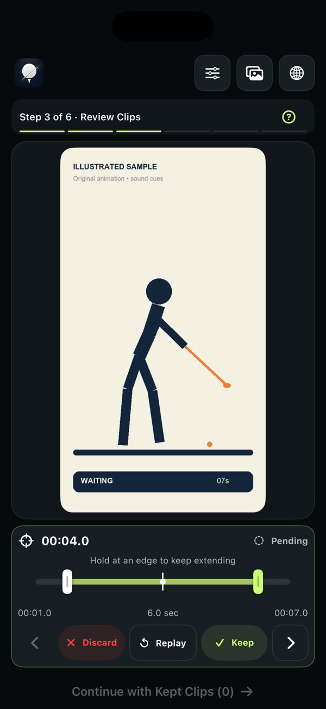
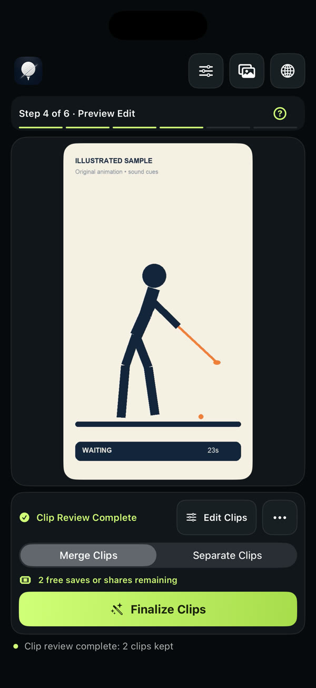
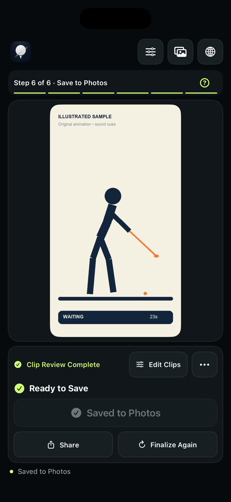

导入录像Import
从相册或文件选择视频。一个项目可放 1–9 段素材，累计不超过 2 小时。Pick videos from Photos or Files. Up to 9 videos, 2 hours total per project.


AI 生成画面AI-generated footageCutCut Golf · iPhone
把一整段练习录像，整理成你真正会回看的那几杆。
自动整理候选片段，由你决定留下什么。
Turn a whole practice recording into the few swings you’ll actually rewatch.
Get candidate clips automatically — you decide what stays.
01 · 问题The problem
摆球、走动、等待……真正的挥杆被埋在长录像里，回看时只能来回拖进度条。Teeing up, walking, waiting… the real swings are buried. Rewatching means endless scrubbing. CutCut 在 iPhone 本地整理候选片段，方便你逐段回看和筛选。CutCut prepares candidate clips on your iPhone so you can review and choose them one by one. 你逐段确认、裁剪，合并成一条，或分别保存。机器负责找，你来决定。You review, trim, then merge or save them separately. It finds — you decide.
02 · 亲手试一试Try it yourself
下面是一段 24 秒的示例练习录像，里面有 3 次挥杆。拖动边界，点保留或舍弃，再生成成片。规则和 App 里一样。A 24-second sample practice recording with three swings. Drag the edges, keep or discard, then finalize — the same rules as the app.
03 · 怎么用How it works
从相册或文件选择视频。一个项目可放 1–9 段素材，累计不超过 2 小时。Pick videos from Photos or Files. Up to 9 videos, 2 hours total per project.

选择保守、标准或灵敏三档，设定击球前后各保留几秒（0–30 秒），然后在本地查找候选片段。Choose Conservative, Standard or Sensitive, set how much to keep before and after impact (0–30 s), and find candidate clips on-device.

每个候选默认待定。看一眼，点保留或舍弃，自动跳到下一段。Every candidate starts as Pending. Watch it, tap Keep or Discard, and move to the next.

拖动起止边界：起点 00:01.0 → 00:02.0，时长 6.0 → 5.0 秒。在边缘按住可以继续延伸。Drag either edge: start 00:01.0 → 00:02.0, length 6.0 → 5.0 sec. Hold at an edge to keep extending.
合并成一条精选，或每段单独生成，方便发给教练。生成前可以连续预览已保留的片段。Merge into one highlight, or export each clip on its own — handy for your coach. Preview kept clips back to back first.

生成后显示「准备保存」，点「保存到相册」才会写入照片；也可以用系统分享发出去。原视频不会被改动。After finalizing you’re Ready to Save; tap Save to Photos to write it, or Share. Your original video is never altered.

04 · 功能Features
根据素材调整灵敏度，再逐段确认想保留的挥杆。Adjust the sensitivity for your footage, then review the candidates and keep the swings you want.
击球前、击球后分别设置，保留完整的上杆与收杆。Set before and after impact separately to keep the full backswing and finish.
起点、终点都能拖，可以越过击球标记，重播确认。Drag both ends, past the impact marker if you like, then replay to check.
生成前按原顺序连播已保留片段，选错了随时回去改。Watch kept clips in order before you export, and go back anytime.
一条练习精选拿来回看，或者一杆一个文件发给教练。导出 MP4，保留原声。One highlight to rewatch, or one file per swing for your coach. MP4 with original audio.
分几次录的练习，放在一起整理：最多 9 段，合计 2 小时。Recorded in parts? Bring them together: up to 9 videos, 2 hours total.
顶部一键切换，下次打开仍会记住。Switch from the top bar; your choice is remembered.
05 · 隐私Privacy
06 · 适合谁Made for
练完留下几杆想再看的，合并成一条。Keep the few swings worth rewatching in one clip.
一杆一个文件，带着具体问题发给教练。One file per swing, sent with a specific question.
先把学员录像整理好，再用自己的方式讲解。Clean up student footage, then teach your way.
先挑出素材，再交给剪辑软件加字幕和配乐。Pull the shots, then add captions and music elsewhere.
07 · 价格Pricing
价格为 2026 年 10 月 12 日中国大陆 App Store 页面显示价格；美国为 US$9.99。实际金额以应用内购买页面为准。Price shown on the US App Store as of Oct 12, 2026 (¥45 in mainland China). The in-app purchase page shows the final amount for your region.
08 · FAQ
不需要 CutCut 账号。打开 App 可以先看示例引导，也可以直接导入自己的视频。No CutCut account is needed. Open the app, try the Quick Guide, or import your own video right away.
可以。一个项目支持 1–9 段视频，累计时长不超过 2 小时。Yes. A project holds 1–9 videos, up to 2 hours total.
不需要。只要已经保留了片段，就可以继续生成；没审的候选不会自动加入。No. Once you’ve kept at least one clip you can continue; unreviewed candidates are left out.
生成后还要点「保存到相册」，并允许 CutCut 添加照片。内置教程里的保存只是演练，不会写入相册。After finalizing, tap Save to Photos and allow CutCut to add to your library. Saving in the Quick Guide is practice only.
不会。裁剪结果会生成新的文件。No. Trims produce new output files.
保持联网，确认使用购买时的 Apple 账号，在首页皇冠入口选择恢复购买。仍有问题请联系我们。Stay online, make sure you’re on the Apple Account used to buy, then tap the crown on the home screen and choose Restore Purchase. Still stuck? Contact us.
在 App Store 搜索「CutCut Golf」，需要 iOS 17 或更高版本。Search “CutCut Golf” on the App Store. Requires iOS 17 or later.
前往Download on theApp Store